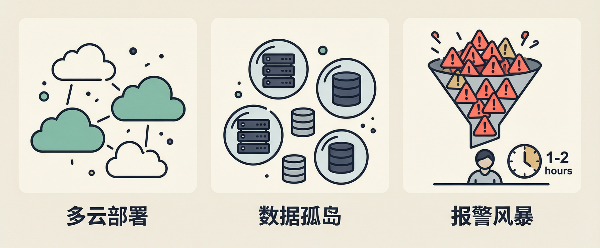
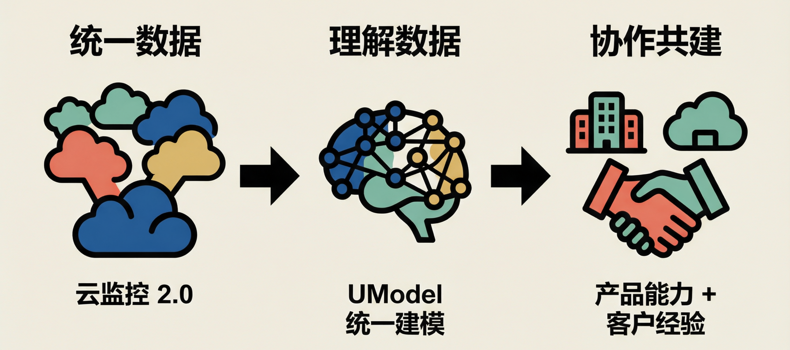
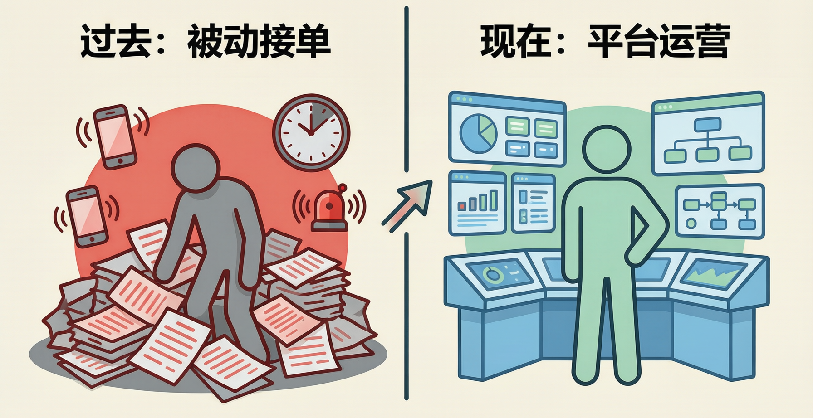
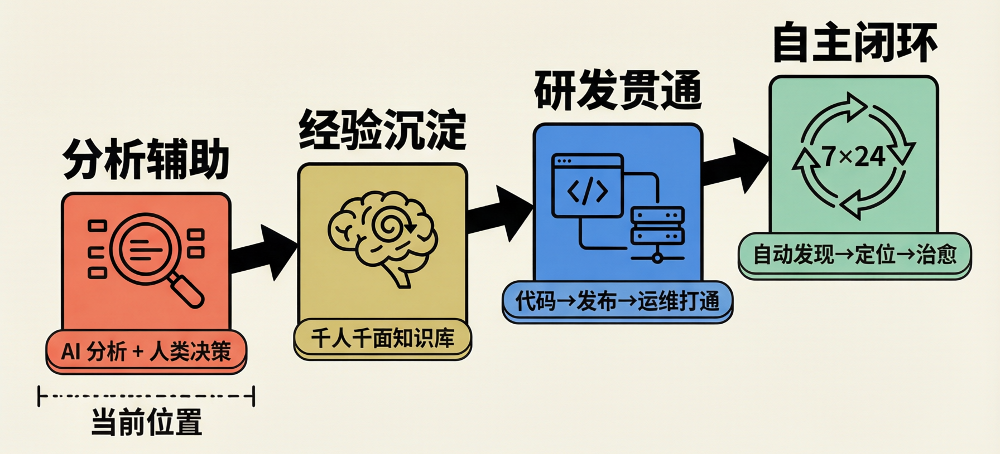

吉利汽车智能运维的落地实践¶
当吉利集团旗下数百个业务系统的告警信息在同一时间涌入监控平台，原本清晰的监控大屏瞬间被铺天盖地的红色报警信息淹没 —— 这是吉利运维团队曾经频繁面对的 “报警风暴” 场景。在这样的混乱中，如何在最短时间内定位故障根因、恢复业务稳定，成为整个团队最迫切的难题。
近日，吉利汽车用户数据中心数据质量部长宋鸣，与阿里云云原生应用平台产品负责人李国强，分享了双方联手落地阿里云全域智能运维平台 STAROps（注：融合大模型能力与可观测数据，实现运维全流程自主闭环的智能运维平台）的实战经验，围绕落地过程中的真实痛点、实践弯路、团队转型策略以及未来演进方向展开深度分享，为正在探索智能运维转型的团队提供了可落地的一手参考。
一、从 50 万并发到战略融合的新挑战¶
吉利与阿里云的合作，可以追溯到 2021 年极氪品牌成立之初。宋鸣回忆，从那时起，极氪就与阿里云结成了紧密的合作伙伴，双方持续推进云原生改造项目，也交出了亮眼的成果 —— 在车型发布会现场，支撑了最高 50 万的并发访问量。“这个成绩在汽车行业的发布会场景里，是相当出彩的。” 宋鸣说。2024 年，吉利集团发布《台州宣言》，启动了集团层面的业务与技术整合，极氪也在此过程中并入吉利集团体系。这对技术团队而言，意味着全新的挑战：原本独立的多品牌、多系统需要整合为统一的技术体系，运维的复杂度随之急剧攀升。过去在极氪体系下运转良好的运维模式，面对规模翻倍的系统群，开始逐渐力不从心。
1、三重痛点：报警风暴来了怎么办¶

宋鸣坦言，融合之后系统变得越来越复杂，困境集中体现在三个层面。
首先是多云异构的环境难题。吉利的系统分布在包括阿里云在内的多个云平台之上，基础设施异构程度高，运维团队需要同时适配多套不同的环境，管理成本陡增。
第二是系统与数据的孤岛问题。数百个业务系统各自为政，彼此之间的依赖拓扑关系如同黑盒，没有统一的梳理。“这些系统都是数据孤岛，连系统间的调用拓扑都是不透明的。” 宋鸣形容道。
而最棘手的，是故障响应的效率瓶颈。宋鸣描述了团队曾经面对的真实场景：“一旦线上出现问题，监控屏上会瞬间弹出数百条报警 —— 我们面对的其实是一场‘报警风暴’。该从哪里下手？哪个是故障的源头？谁来负责排查？”靠传统的逐个系统排查、层层递进的方式，故障的平均恢复周期动辄长达一两个小时。“这个速度，已经完全跟不上业务的要求了。” 宋鸣说。
这些问题叠加在一起，倒逼团队重新思考：传统运维的效率天花板在哪里？智能运维，是不是破局的方向？
2、目标锚定：向 “一五三零” 冲刺¶
运维行业有一个广为人知的效率目标框架：一分钟发现故障、五分钟定位根因、三十分钟恢复业务，也就是 “一五三零” 标准。吉利也将这个标准作为智能运维建设的核心目标。
“但靠传统的数字化运维方式 —— 发现问题、发报警、提工单，根本没办法达成这个目标。” 宋鸣直言。团队经过反复思考，最终把突破口锁定在了最核心的环节：快速根因定位。“我们把所有的重心，都放在了怎么快速找到故障的根本问题上。” 宋鸣说，“这也是我们最终和阿里云的 STAROps 走到一起的原因。”
方向明确之后，双方的合作正式启动。但谁也没想到，真正的落地过程，远比想象中曲折。
3、落地的弯路：比技术更先要解决的是认知¶
落地过程中，团队遇到了不少挑战，但聊到最大的挑战时，宋鸣的回答出乎意料——不是技术难题，而是"观念问题"。
“最开始我们以为，智能运维就是买个产品，部署上线之后它就能自己跑起来、自己解决问题了。” 宋鸣笑着回忆。但真正开始落地之后，团队才发现，智能运维不是一个 “开箱即用” 的工具，它需要配套的体系规范，甚至需要专门的团队来做适配，否则根本寸步难行。纠正了认知偏差之后，更具体的技术卡点接踵而至。作为较早接触 STAROps 的企业，吉利团队最初对产品有很高的期待，以为系统间的关联拓扑可以自动梳理完成。但实际用起来才发现，很多环节都是断点：日志的断点、中间件的断点、调用链路的断点，几乎随处可见。宋鸣举了两个真实的例子：有些系统跨机房甚至跨云部署，日志分散在不同的平台，根本没办法串联起来；还有些系统之间数据库账号混用，出了问题之后，根本没法判断是哪个服务引发的异常。“没有基础的治理，Agentic Ops根本没办法识别：谁是谁？哪里出了问题？哪些是干扰信息？哪些才是根本问题？” 宋鸣总结道。
踩过这些实践的弯路之后，团队终于形成了一个关键的认知：运维的架构资产也是核心资产，数据质量更是智能运维的核心底座。于是他们下定决心，把那些琐碎的历史遗留问题、基础治理工作全部重新梳理，把整个运维的底子打牢。“在这个基础之上，我们最终才真正让 AI 开始帮我们发力。”
而这场基础改造的战斗，从来都不是吉利一方在孤军奋战。
二、破局之道：从数据底座开始的深度共建¶

面对这场战斗，从产品视角出发，李国强十分认同宋鸣的判断：所有智能运维产品落地的核心，永远是数据。“智能体或者大模型，就像一个经验丰富的专家，但你喂给它的数据，最终决定了它能不能给出你想要的结果。”在可观测领域，数据的复杂度尤其高：不同云平台、不同基础设施产生的数据，加上企业内部沉淀的自有数据，构成了高度异构的环境。也正是因为看到了这一点，STAROps 的设计思路，从来不是把一个 “单一产品” 直接交付给客户，而是从数据准备阶段开始，就和客户一起共建。
具体来说，整个体系的搭建围绕三个核心步骤展开：
第一步是统一数据。阿里云去年发布的云监控 2.0，核心就是解决这个问题：把散落在各处的异构数据，实现统一存储、统一分析、统一查看。李国强认为，这是所有智能化能力的前提，没有这一步，后面的一切都是空中楼阁。
第二步是理解数据。数据统一之后，还需要让智能体读懂数据之间的关联关系。这一步依托的是阿里云的 UModel（Unified Model）。“阿里云的基础设施我们已基本全部完成了自动建模。” 李国强说，而客户的自有业务信息，则可以通过UModel建模体系的开放能力，由客户自己补充进来，让整个体系更贴合企业的实际情况。
第三步是持续共建。李国强强调，STAROps 从来不是一个单一的运维智能体，“而是要和客户一起，把数据准备、数据分析，直到最后智能体的问答交互，整个链路的工作都做扎实，这里面的细节工作非常多。”宋鸣在一旁点头认同：“很多实践中的难题，都是我们双方一起摸索、共同趟出来的。”
数据底座的搭建，为智能运维扫清了技术障碍，但新的挑战随之而来：工具准备好了，团队愿意用吗？
三、团队转型：身份在变，信任在建¶

STAROps 落地之后，宋鸣最先观察到的，是运维团队的 “身份转变”。
“传统运维模式里，大家就是接工单，一个个处理、一个个响应。但现在不一样了。” 宋鸣说，大量重复的故障处置工单，已经通过体系化的治理实现了自动化、标准化处理。运维团队不再是被动的 “救火队员”，而是变成了主动的 “运营者”—— 把线上环境作为自己的经营阵地，为新上线的系统提供从部署到稳定运行的全流程服务。团队的精力，也从逐单处理故障，转向了更高维度的工作：架构规划、流程设计、制度优化。但当这套新的工作方式向开发团队推广时，却遇到了阻力。“很多开发工程师说，真的出问题的时候，第一反应还是想用老办法。” 宋鸣坦承。开发者的顾虑很直接：一是怕用新工具耽误时间，二是担心智能体给出错误信息，反而添乱。“这其实是一个信任建立的过程。” 宋鸣分享了他们的破局策略：从低风险的测试环境切入。吉利内部搭建了生产、测试两套环境，在测试环境联调时，一旦出现问题，就直接交给 STAROps 来处理。“这样一来，团队之间的沟通协同成本一下子降了很多。” 先在低风险的场景里让大家尝到甜头，对智能体的信任，就这样一点点建立起来了。
李国强对此深有感触，他用 “战友” 来形容人与智能体的关系：“信任不可能是第一天拿到产品，看个说明书就能建立的。只有一起解决过问题，就像并肩作战的战友一样，才能真正建立信任。”他还举了研发领域的例子来类比这种转变：“前两年大家也在讨论，有了 AI Coding 之后，程序员是不是就不用写代码了？但现在回头看，代码写得少了，不代表贡献少了，而是大家可以把精力放在更高维度的业务价值思考上。运维也是一样的道理。”李国强解释，阿里云内部一直贯彻 DevOps 文化，开发人员同时要负责运维，每天写完代码，还要处理一堆琐事：看告警、排故障、做问题诊断。“这些工作真的有那么强的成就感吗？其实很多时候并没有。” 而智能运维，就是要把运维人员从这些琐碎的日常里解放出来：异常自动发现、根因自动定位、修复建议自动生成，甚至 STAROps 还支持 24 小时自主值守的智能体，帮运维人员盯着系统，不用再担心凌晨的告警电话。
当团队逐渐接受这种人机协作模式之后，双方开始把目光投向更远的地方。
四、未来展望：不止运维，贯穿研发全流程¶

当团队逐渐接受了这种人机协作的新模式，双方开始把目光投向了更远的未来。关于智能运维的下一步，宋鸣和李国强的思考高度一致：运维从来都不应该是一个孤立的环节。
1、嵌入研发全链路¶
宋鸣的观点很明确：“智能运维不应该只是运维人员的工具，而是要贯穿到整个研发全流程里。”他分享了几个具体的设想：在 AI Coding 环节，要实现长时间的自动研发闭环，就需要智能体自动完成测试，大型系统里跨模块的问题定位，完全可以嵌入到编程环节，实现问题的自动修复；在提测阶段，根因定位能力可以直接下沉到代码级别，逆向触发代码的自动修复；在灰度部署过程中，监控能力可以自动触发异常回滚 ——“这些能力，现在其实已经具备了落地的基础。”同时，宋鸣也对 STAROps 提出了新的期望：“现在的使用门槛还是有点高，只有少数专家能在用。希望未来能更下沉，以 Chatbot 的形式嵌入到 IDE 里、嵌入到 CI/CD 流水线里，和整个研发体系深度集成，把效能放到最大。”
李国强听完笑着说：“宋总这刚好说到了我们接下来的产品规划方向。”
2、数据打通与经验飞轮¶
从产品侧，李国强也透露了团队正在推进的工作。
第一是打通研发域与运维域的数据。“宋总说，线上出问题能不能直接定位到某一行代码？那首先智能体得能拿到这些数据才行。” 宋鸣在一旁补充：“它得知道代码在哪。”李国强说，这正是 UModel 在解决的问题：用统一的建模语言，把不同域的数据打通。目前团队已经完成了和阿里云云效产品的研发数据打通，下一步还会支持 GitLab 等主流研发工具。最终，每一次发布的代码变更、发布的机器，所有信息都会被串联起来。“线上出了问题，哪台机器有问题？哪天发的版？甚至是哪个程序员写的代码，还是哪个 AI 智能体生成的代码？全都能追溯到。”
第二是经验的自动沉淀。李国强提到，很多企业的运维知识库，都需要人工整理，既繁琐又不全面。STAROps 正在做的，就是自动获取用户线上的所有运维动作和当时的场景，自动沉淀为知识库。“这样沉淀出来的经验，才是真正贴合这个用户的，做到千人千面。每个用户的运维特征、有效的处置方式，都会自动沉淀下来。”
宋鸣对此非常认可：“这太好了，我们也正在整理自己的运维知识库，如果能打通的话，效率会高很多。”
3、人机协作：走向自主闭环¶
关于智能运维的终局形态，李国强认为，最终一定会走到 “几乎完全自闭环” 的阶段：智能体自动分析找到根因，给出行动建议 —— 比如重启机器、版本回滚、调整参数，然后在确认机制下自动执行。“最开始可能是先给建议，用户确认了我们再执行。未来随着能力的演进，说不定真的能做到 7×24 小时的全自动运维。” 李国强说，这应该是所有运维人最想实现的目标。
但即使到了那一步，他认为运维人员依然有三个不可替代的价值：
一是目标定义：不同业务的可用性要求、响应时间标准都不一样，系统是否健康，最终要和业务的要求对齐，这需要人和业务方共同定义；
二是持续优化：每个企业的体系都不一样，智能体的能力，需要和人类一起持续打磨优化；
三是最终决策：在复杂的场景下，比如要不要回滚、要不要上热修复，很多因素交织在一起，人类的决策依然是最关键的。
宋鸣对此深表认同：“我们下一步也在做同样的事情，把故障治愈的模块都做成标准化的命令，接到模型里。”李国强回应：“这其实就是用户构建自己的运维资产，我们的产品提供模型能力，双方一起搭起来，才能形成完整的闭环。”“没错，是深度合作的过程。” 宋鸣总结道。
五、结语¶
从 “人找问题” 到 “问题找人”，从 “经验驱动” 到 “数据 + AI 驱动”—— 这是吉利在智能运维领域走过的转型之路。这条路带来的核心启示是：智能运维从来不是 “买一个产品” 就能解决的问题，而是一个以数据治理为底座、以产品能力为引擎、以组织协作为保障的系统工程。正如访谈中提到的：智能运维的终极目标，从来不是消灭故障，而是消灭运维的焦虑 —— 让运维工程师能安心睡觉，让业务方不再被凌晨的告警电话叫醒，让整个团队的精力，从 “猜故障、排故障”，真正转向 “创造业务价值”。
如果你的团队也正处在传统运维向智能运维的转型阶段，吉利的实践或许能提供参考：先治数据、再上工具、以场景建信任。如需了解 STAROps 全域智能运维平台的更多信息，可访问阿里云官网查看详情。